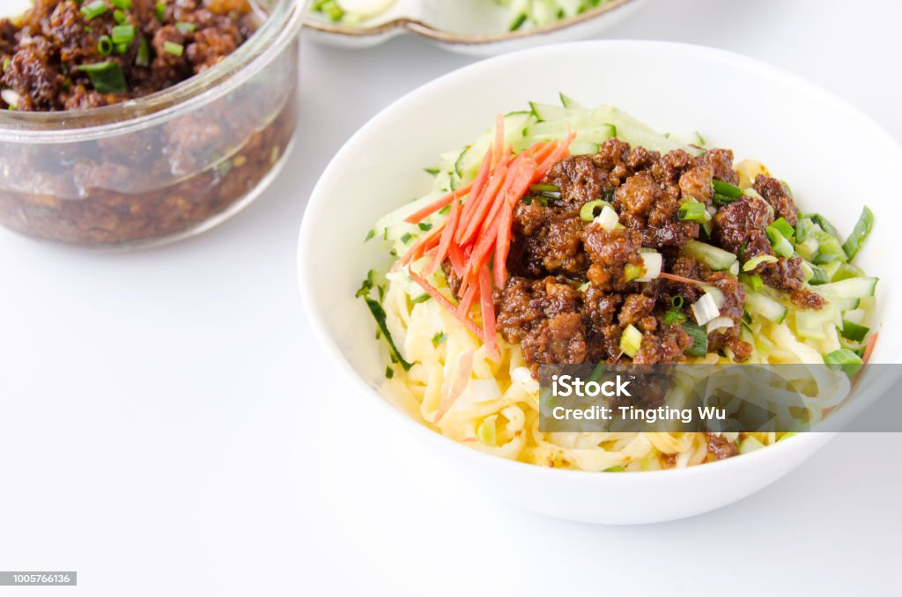

ZhaJiangMian Recipe
Home

Here is how my family cooks the BeiJing style ZhaJianMian noodles
Ingredients
- 500g all purpose flour
- 180 ml water
- Include a bowl of water and 3 scoops yellow bean past
- 1 scoop black bean paste
- 2 scoops of sweet paste.
Steps
- Cook pork tiny cubes.
- Add sesame oil and vegetable oil. Sesame and vegetable respectively is 1:3. Add pork into oils. Cook on wok.
- Add cooking wine.
- Mix huang jiang and gan jiang. 3:1. in bowl.
add one spoon huang jiang fen and cooking wine 1:5.
- In wok with pork cubes add the huang jiang and gan jian mixture. Cook 25 minutes. Add jiang fen and cooking wine periodically.
Add around a spoon of sugar and some sesame oil.